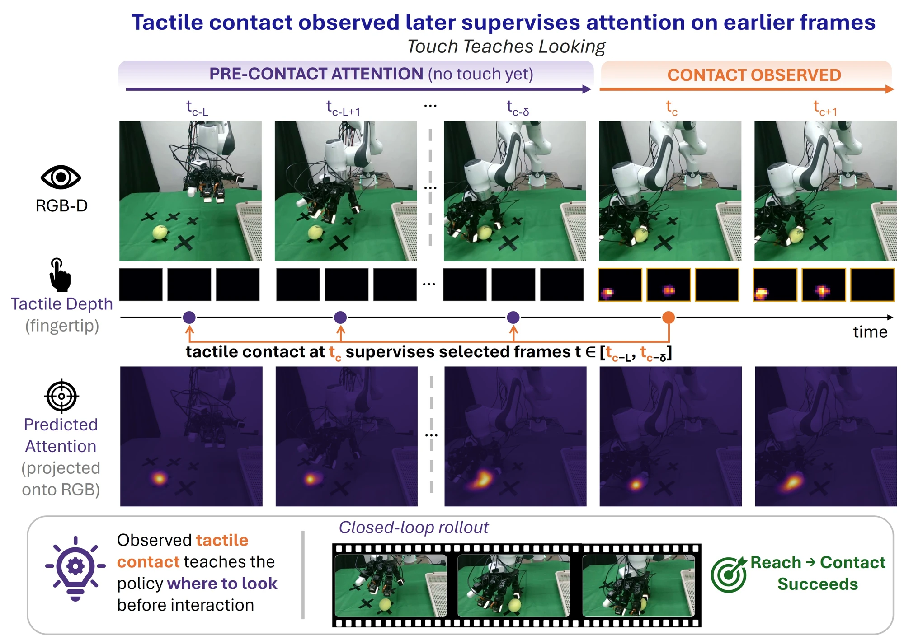
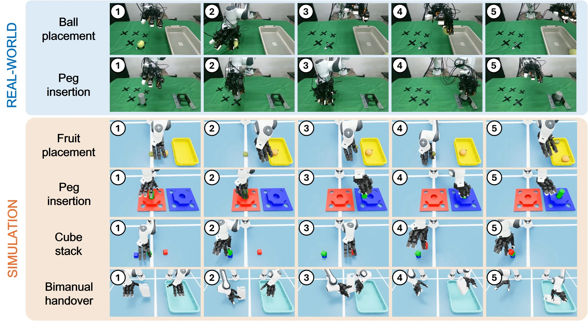
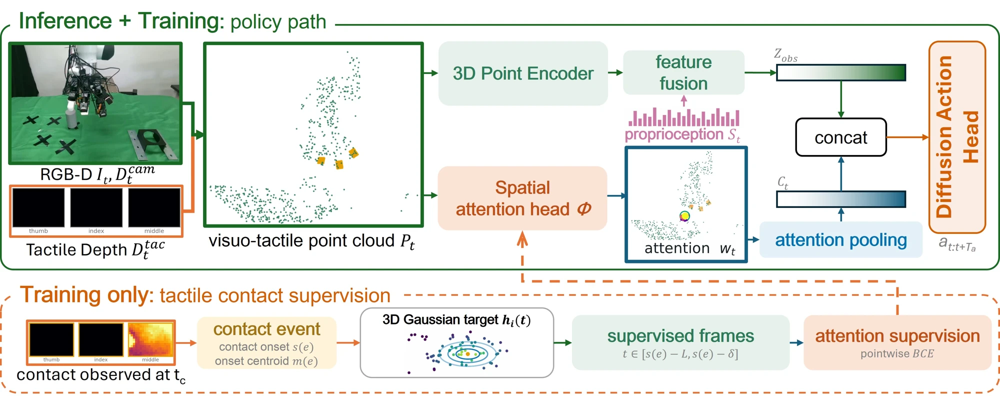
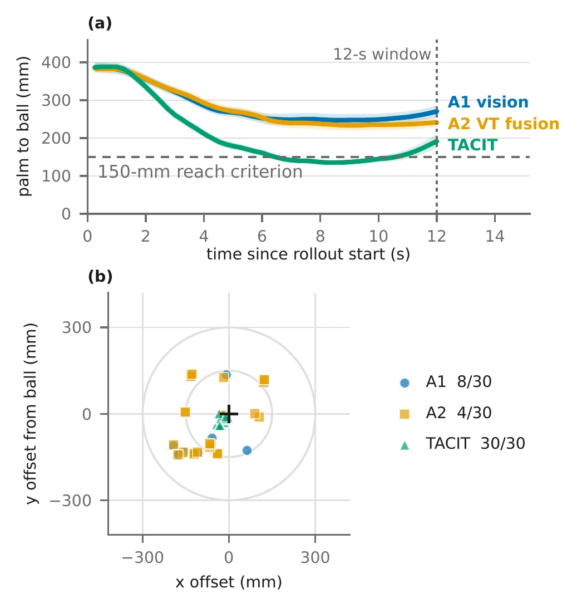
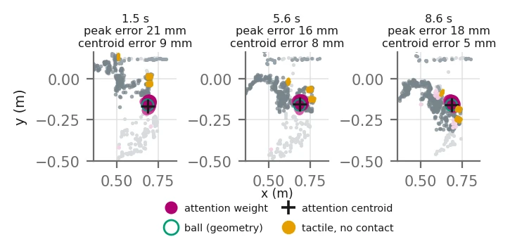
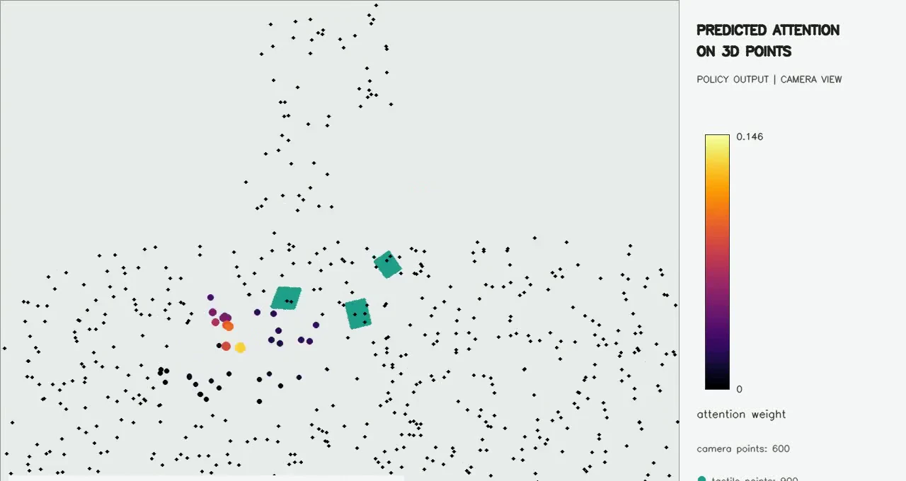
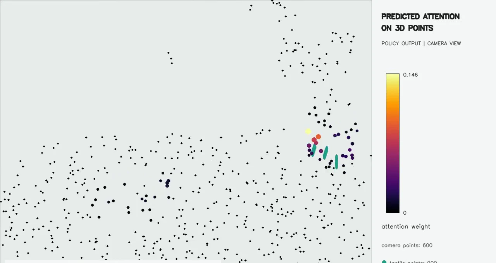

TActile Contact Informs aTtention
TACIT: Tactile Contact Supervision for Spatial Attention in Dexterous Manipulation
TACIT uses touch recorded during demonstrations to teach a robot where to pay attention as it approaches an object.
Learning from contact
When the fingers touch the ball in a demonstration, their contact gives us a location. TACIT uses that location to teach attention on earlier camera frames. At inference, the policy predicts attention from the current camera points.

Evaluation tasks

How TACIT works
The orange path turns fingertip contact into a training target. The green path shows how the diffusion policy uses the current camera points and tactile observations to act.

A training target, frame by frame
Watch the Gaussian label drawn on earlier camera frames using the contact location measured later in the demonstration.
How the target and policy feature are computed
Active tactile taxels and calibrated fingertip poses locate the contact centroid in the camera cloud’s coordinate frame without an object pose estimate. The centroid defines a Gaussian target on sampled camera points. Frame selection checks the lead time to the chosen contact and whether the camera points support the target. A selected frame can follow an earlier contact.
The attention head scores raw points independently, primarily from base-frame XYZ for camera points. The policy receives a feature computed from the weighted camera points, peak relevance, and scaled entropy.
Real-robot results
Compared with the input-matched A2 baseline, TACIT raised task success from 10.0% to 66.7% for ball placement and from 20.0% to 73.3% for peg insertion at the evaluated checkpoints.
Ball placement
Peg insertion
Example trials at the same nominal placement, shown at 1.5× speed.
| Policy | Ball reach | Ball success | Peg reach | Peg success |
|---|---|---|---|---|
| A1 · DP3 Vision-only reference | 8/30 | 6/30 | 14/30 | 13/30 |
| A2 · 3D VT fusion Input-matched baseline | 4/30 | 3/30 | 6/30 | 6/30 |
| TACIT Contact-supervised attention | 30/30 | 20/30 | 30/30 | 22/30 |
Reach: the palm enters the 150 mm grasp-approach region in the first 12 seconds. TACIT reaches in every trial at these evaluated checkpoints; remaining failures occur after arrival.
Task success: the ball is released inside the basket, or the peg remains inserted in the fixture, within the 30-second execution window. Reaching alone does not meet either task criterion.
Robot setup and baselines
We collected ten demonstrations per task on a Franka FR3 with a LEAP hand and three 9DTact fingertips. A2 and TACIT each use 600 camera points and 900 tactile points. A1 is a vision-only reference with 1,500 camera points. The A1–A2 comparison changes both the input modality and the camera sampling budget.
TACIT task success exceeds A2 at all five ball placement regions and four of five peg regions. Placements are the independent unit. The table gives descriptive pooled counts for the evaluated checkpoints. See Paper §§4.3–4.4 and §5.1.
Inspect the real-ball approach trajectories

What contact supervision adds
Across three training seeds on real ball placement and simulated peg insertion, both contact-supervised variants outperformed A2.5. A2.5 uses the same attention head, trained by the action loss alone.
| Measure | A2 | A2.5 | TACIT-contact | TACIT |
|---|---|---|---|---|
| Real ball reached Out of 30 per seed | 4, 10, 9 | 6, 4, 3 | 29, 21, 27 | 30, 27, 26 |
| Real ball placed Out of 30 per seed | 3, 3, 7 | 2, 3, 2 | 14, 17, 24 | 20, 15, 19 |
| Simulated peg moved Out of 81 per seed | 47, 28, 27 | 33, 35, 59 | 71, 81, 81 | 80, 77, 81 |
| Simulated peg inserted Out of 81 per seed | 1, 1, 2 | 3, 1, 5 | 14, 16, 17 | 12, 13, 24 |
TACIT supervises frames before the selected contact. TACIT-contact supervises frames during contact. Their results show no consistent ordering across seeds in either task.
How the timing comparison was controlled
The variants use the same attention architecture. The controls limit the difference in the total number of supervised frames while allowing the allocation to vary by contact event.
Attention before touch
In this rollout, the attention peak is near the ball before the tactile sensors activate.
Camera view
Policy point cloud
Real-ball attention frames

The heatmap uses a fixed scale. The point-cloud view uses all stored points. Both videos hold the latest prediction between inference frames.
Simulation diagnostics
We tested new positions inside each task’s training convex hull to see how far the policies progressed. Full task completion remained limited.
Simulated peg attention frames




Shown from the front camera. Warmer camera points carry higher predicted attention weights. Green marks tactile points.
Inspect cross-task completion · manuscript Table IV
| Task | A1 | A2 | TACIT |
|---|---|---|---|
| Fruit placement | 4.9 ± 1.3% (11/225) | 0.0 ± 0.0% (0/225) | 4.9 ± 2.3% (11/225) |
| Peg insertion | 2.5 ± 3.5% (2/81) | 1.2 ± 1.7% (1/81) | 14.8 ± 5.2% (12/81) |
| Cube stack | 5.3 ± 0.0% (12/225) | 10.7 ± 13.2% (24/225) | 20.9 ± 6.7% (47/225) |
| Bimanual handover Architectural extension | 43.3 ± 2.7% (39/90) | 50.0 ± 5.4% (45/90) | 54.4 ± 12.3% (49/90) |
TACIT improves peg and cube success, ties A1 on fruit, and shows no clear advantage on handover. The effect is not uniform across tasks.
Scope and limitations
- Workspace. Real tests use five demonstrated placement regions and one hardware setup. Held-out simulation covers new coordinates inside the training hull. Generalization outside the tested workspace remains untested.
- What the attention shows. The head mainly scores camera points by position. The evidence supports spatial attention near the task object. Semantic object detection remains unverified.
- What improved. TACIT mainly improves approach. Grasp stabilization, insertion, and release can still fail after the hand arrives.
Citation